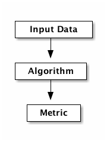
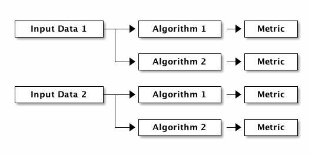
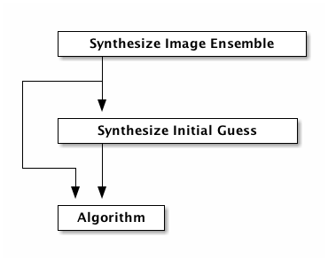
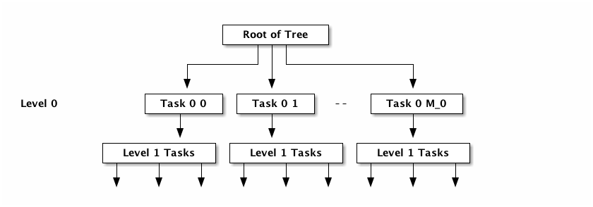

Experiment Chains
CHAINS is a Common Lisp system for constructing an experiment chain
in which a number of tasks are executed to produce a result. Its main
purpose is to accommodate scenarios where the line between a
scientific experiment and algorithmic experimentation is blurred.
Table of Contents
1 A Backstory
This section outlines the main use case for the CHAINS system. The
abstraction the CHAINS system employs is rather strange when
introduced on its own. Hopefully this section aids in understanding
why. The example presented in this section is real, and is the primary
reason for the existence of the CHAINS system.
An important problem in the field of computer vision is that of congealing. The task of congealing is very simple, discover the location of an object contained in an ensemble of images. A key trait of congealing algorithms is that they know nothing about the object in each image, other than it can be assumed that the object is present in each image. A concrete example of congealing would be, given an ensemble of images containing faces, find me the bounding box of each face.
When evaluating a congealing algorithm one must evaluate the algorithm against the following criteria
- Level of initial misalignment
- How far away from the true location can then algorithm correctly locate the object?
- Lighting variation
- How does the algorithm handle variation in appearance due to illumination conditions?
- Image noise
- How does the algorithm handle variation in appearance due to image noise?
- Appearance variation
- How does the algorithm handle variation in appearance of the object? For faces, this would mean male versus female, beard versus non-beard, and so on.
- Occlusion
- How does the algorithm handle cases where the object is occluded by another object? e.g. a face occluded by hair, glasses or another object.
- Ensemble size
- How does the number of images in the ensemble influence performance?
- Cross validation on images
- Testing performance on another ensemble of images with exactly the same statistics.
- Cross validation on geometry
- Testing performance on the same collection of images but with different random starting locations.
It is fine if you do not understand all of the above. The key point is that they are variables or statistics measured on the ensemble of images fed to the congealing algorithm. Congealing algorithms behave differently depending on the value of each variable. In fact, even a different ensemble with the same statistics can cause algorithms to behave differently.
In addition to variables associated with the input data, a congealing algorithm typically has a number of parameters that influence its own behaviour. These parameters have a range of values that are "worth" trying, with the best value selected at the end by some means.
One also must compare the algorithm against another algorithm on exactly the same image ensemble. Having exactly the same ensemble is extremely important as a strategically chosen change can have a dramatic effect on performance for some algorithms.
Once all of the algorithms are executed, a results collation process begins. The results obtained depend on the report or paper that is being written. These results may involve performance conditioned on the statistics of the image ensemble, or the amount of influence an algorithm parameter has on the overall algorithm performance.
Everything up to this point is straight forward. You prepare the image ensemble to be fed to all congealing algorithms, execute each algorithm, prepare the results and then write the report/paper. Easy.
Unfortunately, this rarely occurs in practice. In practice, one implements an algorithm that has been published. Upon experimenting (or implementing) with the algorithm, it is discovered that there is something that could be improved. For example, the algorithm cannot handle image ensembles with certain statistics or the algorithm is really sensitive to a particular parameter or the algorithm is flawed in some manner. With this new information, the goal now is to empirically confirm the identified problem and design a new algorithm that can overcome the identified problem.
Immediately we see that the algorithm and the experiments to be performed are not concrete. One typically creates many algorithms that may "do the job", but one does not know whether it is an idea worth investigating further until it has been implemented and a preliminary set of results are obtained. Additionally, the type of results required may change depending on the point needed to be made.
What a scientist wants to work on is the algorithm. That is what is important. That is what is publishable. The experiment stuff validates the argument for the algorithm, but it is not the primary focus.
Saying it is not of primary focus is rather ironic. The experiment design partly led to the discovery. The experiment design also empirically validates a new discovery. Furthermore, it is the experiment design where much of a computer scientist's effort is spent and it is to easy to see why.
The problem with experiments is that they take time to implement and to execute. The long execution time is because the number of experiments is a combinatorial function defined by the number of values specified for each experiment parameter. i.e. if you have a large number of experiment parameters and a large number of values per experiment parameter then you have an extremely large number of experiments. Fortunately, since the experiments are independent, they can be executed in parallel. Well, not quite in parallel as described later, but the experiment execution problem does belong to the class of embarrassingly parallelisable problems.
Another difficulty is collating results. When writing a report or a paper, one typically needs additional graphs (or tables, but who likes tables?) that were not thought of initially. To accommodate this use case, the output of the experiments should be saved in order to save (valuable) time. This serialisation not only applies to the algorithm output and input, but for all data computed in the experiment.
This database of serialised experiment data also needs to have the ability to be queried. This ability is needed by the results collation step mentioned previously.
All of this is simple to state, but is moderately difficult to implement and very easy to make simple mistakes which are hard to identify. Moreover, the pipeline for conducting experiments is similar across many domains. Writing something again and again is not a smart use of one's time. Additionally, the code that performs the experiment setup, execution and result collation very rarely receives the level of attention and care that algorithms receive. In my local minima which is termed life, I have not seen released code that just performs experiments. Why? Great question.
The CHAINS system attempts to provide facilities for the above tasks
in order for the scientist to spend more time on developing an
understanding of existing algorithms and to develop new algorithms
that overcome identified issues.
Lastly, the CHAINS system is not a plug and play work flow optimiser
where one only performs plumbing. It should not be a dependency in
your algorithm implementations. The only place where the CHAINS
system should be used is in verifying and validating an algorithm's
performance on different types of data and collating algorithm results
for some sort of publication.
2 Concepts and mental models
The background section painted a picture of the aspects of the problem
the CHAINS system attempts to address. This section illustrates more
of the core concepts and code that underpin the library.
Performing a single experiment is really the serial execution of a number of tasks. For the congealing problem outlined above, the high-level tasks are as follows

The input data task is responsible for creating the ensemble of images fed to the algorithm. Once the algorithm has provided an estimate of the object's position, this position is then compared to the ground truth using a metric. The metric provides a quantitative measure of the algorithm's performance.
This linking of tasks to be executed is termed a task chain, or just a chain.
A collection of experiments to be executed is really a tree. Consider the following figure where there are two congealing algorithms being evaluated on two different sets of input data.

The above figure presents two trees which start from an input data
task. The CHAINS system inserts a "start here" root task in order to
produce a single tree. A key property of the above tree is that a path
from the root task to a leaf represents a single experiment or task
chain.
The tree view of the experiments also highlights the parallelism of the experiment execution. Once a task is completed, all of its children can now be executed in parallel.
The CHAINS system does not limit the length of the chain, nor is
there any requirement that all leaves should have the same distance to
the root task. In fact the CHAINS system does not provide any
default tasks as tasks are fundamentally problem specific. What the
CHAINS system does provide is a mechanism for documenting a tree,
constructing a new tree, executing a tree, chain serialisation, chain
querying and discovering an existing tree.
Another important characteristic of tasks is the way they
interact. The CHAINS system assumes that a task can only depend on
output from previous tasks in the chain. This is shown in the next
figure for the congealing problem.

As you can see, the input to the algorithm requires data from the
task(s) that synthesize the image ensemble and the task(s) that
synthesize the initial guess. The above diagram is obviously no longer
a chain, it is a directed graph. How the CHAINS system models the
above graph is by distinguishing between the operation to be performed
and the input and output of that operation. This distinction is made
to encourage the creation of reusable tasks. How tasks form a chain is
dependent on the experiment design and is by definition not reusable
across designs.
We now turn to implementing the above graph. The macro DEFINE-TASK
is used to create a new task class. The "Algorithm" task in the above
diagram would be defined using the following code
(define-task algorithm () ((sigma :initarg :sigma :reader sigma)))
where SIGMA is some parameter for the algorithm. The DEFINE-TASK
macro is like DEFCLASS but with some features removed. Its purpose
is to hide away the details of how tasks are implemented. Facilities
for the programmatic creation of new task classes are provided
e.g. ENSURE-TASK.
When a task is performed, the task's operation is executed. Before outlining how to define a task's operation, lets outline what an operation is. An operation can be understood as being a method like so
(defmethod perform-task ((task task-class) chain) ;; Obtain task inputs (let ((var-a (compute-task-input :input-a (find-class 'task-class) chain)) (var-b (compute-task-input :input-b (find-class 'task-class) chain))) ;; Task Body ...))
where CHAIN is a list of tasks that have already been performed. As
you can see, a task can only have one operation i.e. the performed
tasks in CHAIN have no effect on the operation. How the performed
tasks in the chain influence the operation is via the task's
inputs. Computing the value of these inputs is performed using the
hypothetical function COMPUTE-TASK-INPUT. It is the inputs to the
task's operation that depend on the already performed tasks. This is
how the CHAINS system connects tasks to form a graph.
The operation for the "Algorithm" task would be implemented as follows
in the CHAINS system.
(define-task-input ensemble-images) ;; The images fed to the algorithm (define-task-input initial-guess) ;; The initial guess of the object's location (define-operation (object algorithm) ((images ensemble-images) (guess initial-guess)) (perorm-congealing images guess :sigma (sigma object)))
We begin with the DEFINE-OPERATION form where the expression
(OBJECT ALGORITHM) corresponds to the task specialization in the
PERFORM-TASK method example. The second argument to
DEFINE-OPERATION is a list of the inputs required by the task. Each
item in this list must be a list of two symbols. The first symbol is a
variable the operation body can use to access the value of the task
input. The second symbol represents the name of the task input that
the task needs to perform its operation.
Each task input specified in DEFINE-OPERATION must have been
declared using DEFINE-TASK-INPUT. It is important to understand that
a task input is not a class, it is special type of function provided
by the CHAINS system. This special function dispatches on the tasks
found in the CHAIN and the task that is about to be performed.
Before detailing how to add "methods" or TASK-INPUT-FUNCTIONS to a
TASK-INPUT, we first create the tasks responsible for controlling
the image ensemble and the initial guess.
(define-task basic-ensemble () (number-of-subjects samples-per-subject)) (define-task initial-guess/similarity-transform () (scale rotation translation))
With the above tasks, we are now ready to define the task input
functions using DEFINE-TASK-INPUT-FUNCTION for the algorithm
operation.
(define-task-input-function ensemble-images algorithm ((data basic-ensemble)) (task-value data)) (define-task-input-function initial-guess algorithm ((data initial-guess/similarity-transform)) (task-value data))
The first argument to DEFINE-TASK-INPUT-FUNCTION is the name of the
task input that the function is to be added to. The second argument
refers to the task that is about to be performed, termed the target
task or target class. The third argument represents the performed
tasks needed to compute the value to be used as input. All forms after
the third argument represent the body of the task input function. The
value (values are unsupported) of the last evaluated form is what is
fed to the operation.
The function TASK-VALUE returns the result of executing a tasks'
operation, in this case the result of
INITIAL-GUESS/SIMILARITY-TRANSFORM task.
The rules for computing which task input function is to be used to compute a value are currently defined as
- the most specific target task
- the most recent performed task
- the most specific performed task
This is obviously a partial definition. At the time of writing it is
not clear what the defaults should be and I am interested in getting
feedback from users. Because of this, there is no such
CALL-NEXT-FUNCTION local function like there is with generic
functions and methods with the local function CALL-NEXT-METHOD.
3 Serialisation
The default serialisation strategy employed in the CHAINS system is
a very simple system requiring only the lisp pretty printer and files
and directories on the storage device.
Each node of an experiment tree has its own directory in order to
store the task parameters, the task value generated by a task's
operation and other task specific data. The name of this directory is
computed using the function TASK-STRING.
(defgeneric task-string (task))
A default implementation of TASK-STRING exists for all tasks. Example
output for the task is as follows
(define-task example-task () ((sigma :initarg :sigma :reader sigma) (rho :initarg :rho :reader rho))) (task-string (make-instance 'example-task :sigma 0.5 :rho 1.1)) ;; "example-task-0.5-1.1"
Note that the slot values for the task's superclasses precede the slot values for the subclass.
Serialisation of tasks is performed using the function
SERIALISE-TASK. This function produces a string that when read and
evaluated creates a new instance of the task which is considered
equal to the task that was serialised.
(defun serialise-task (stream task))
SERIALISE-TASK iterates through all slots of the task,
transforming each slot value in to an s-expression which evaluates to
an equal object. Customisation of the generated expression for a
given object is provided by the OBJECT-SEXP generic function.
(defgeneric object-sexp (object))
If no OBJECT-SEXP method exists for OBJECT, then the object will
be serialised using PRINT-OBJECT with *PRINT-READABLY* bound to
T.
4 Querying
Querying a set of experiments is critical to the collation of results.
The function CONTAINS-TASK-P can be used to determine if a chain
contains a task that is a subclass of TASK-CLASS.
(defun contains-task-p (chain task-class))
The function FIND-CHAINS-WITH-TASK returns all chains in which
CONTAINS-TASK-P is T for the given task.
(defun find-chains-with-task (chains task-class))
Another important function is GROUP-BY, which can group chains
together according to given a test.
(defun group-by (sequence test &key key))
In practice, the GROUP-BY function is needed so frequently and
coupled so tightly with the tasks, that a special function
GROUP-CHAINS is provided. The GROUP-CHAINS function works in
conjunction with information specified when creating a new task class.
(defun group-chains (chains expression &key sort inner-sort))
An EXPRESSION is a form which is used to synthesize a predicate
which is used to compare two chains. Valid expressions are
symbol- Find two tasks, one from each chain, whose classes are
EQUALand of typeSYMBOL. e.g. all congealing algorithm tasks inherit fromALGORITHM, thus specifying(quote ALGORITHM)would group all chains that use the same algorithm. (= symbol :static)- Find two tasks, one from each chain, which
are of type
SYMBOLand are equal according to the predicate for the task classSYMBOL. (= symbol :dynamic)- Find two tasks, one from each chain, whose
classes are
EQUAL, are of typeSYMBOL, and are equal according to the task predicate for the found task class. (= symbol)- Find two tasks, one from each chain, which are of
type
SYMBOLand are equal according to the predicate for the task classSYMBOL. An error is signaled if a task is found which is a subclass ofSYMBOL. (= symbol name)- This expression specifies that the chains
within a group all have the same value for the slot
NAMEin the task with typeSYMBOL. (and &rest expressions)- This expression specifies that all the
chains in a single group satisfy all
EXPRESSIONS.
The last two expressions do not explicitly refer to the predicate
=. The actual predicate used is obtained from the :PREDICATES slot
definition argument used within DEFINE-TASK
(define-task geometric-cross-validation () ((sample :initarg sample :reader sample :predicates number :documentation "The index of the random sample.")))
Predicates represent a collection of comparison functions for a
specific type of value. The predicates for the built-in NUMBER are
defined as follows
(define-predicates number #'= #'< #'>)
Other built-in predicates are STRING/CASE-SENSITIVE and
STRING/CASE-INSENSITIVE.
(define-predicates string/case-sensitive #'string= #'string< #'string>) (define-predicates string/case-insensitive #'string-equal #'string-lessp #'string-greaterp)
The keyword arguments SORT and INNER-SORT of the GROUP-CHAINS
function perform sorting of the groups and the chains within the
groups respectively according to a specified sort expression. A sort
expression can be one of
(> symbol name)- Like the
=expression previously, but using theTEST>-FUNCTIONpredicate. (< symbol name)- Similar to the
>expression. (:classes &rest task-class-names)- Order tasks according to
their order of appearance in
TASK-CLASS-NAMES. It is an error if a task is found which does not inherit from any class inTASK-CLASS-NAMES.
If the same expression and sort expression arguments are being
repeatedly passed to GROUP-CHAINS consider using the function
PREPARE-GROUP-CHAINS.
(defun prepare-group-chains (expression &key sort inner-sort))
This function returns a new function that accepts a single argument which are the chains to be grouped and sorted.
5 Generating
This section outlines the process of generating and documenting a set of experiments.
Creating a set of experiments requires two steps. The first step is
specifying the experiment design using the DEFINE-DESIGN macro. The
second step is generating the experiment tree using the function
GENERATE. It is important to understand that the design document
only contains the information needed to generate the tree, it does not
contain the experiments themselves.
The macro DEFINE-DESIGN is as follows
(defmacro define-design (name design-options &body levels))
The argument NAME is a symbol naming the design that is being
defined. DEFINE-OPTIONS is a list of design options that will be
covered throughout this section. The important argument, LEVELS,
contains information about the hierarchy of the tree.
The following diagram is used to illustrate the LEVELS argument in
DEFINE-DESIGN

The first item of LEVELS, level 0, contains information about
generating the children of the root node. In other words, the children
of the root node represent the first tasks to be executed in each
experiment chain. The second item of LEVELS contains information
about generating the children for each of the children in
level 0. In essence, a level represents the tasks that are to be added
to all leaves in the tree constructed from the previous levels.
Each element of LEVELS is a level definition expression. Examples of
these forms can be seen in an example design used for the congealing
problem
(define-design congealing ((:documentation "A set of experiments for the paper XYZ.")) ;; Images ((image-appearance-and-lighting (:lighting-variation 0 0.1 0.2 0.3 0.4) (:number-of-subjects 1 2 5 10 20) (:samples-per-subject 1 5 10))) ((image-cross-validation (:sample (:splice (loop :for x :from 0 :below 10 :collect x))))) ((synthetic-occlusion (:count 0 1 2) (:size 0.5 0.1 0.2))) ;; Initial guess of object location ((distance-away-from-ground-truth (:distance 2 5 10 15))) ((geometric-cross-validation (:sample 0 1 2))) ;; Algorithms to be executed ((learned-miller (:deltas '(1 1 0.1 0.1 1 1))) least-squares-congealing rasl) ;; Results to be computed. (alignment-performance))
A level definition is a list containing generate expressions, where a generate expression specifies the tasks to generate. When the tasks for each generate expression have been generated, they are appended together to form the list of tasks that are to be appended to each leaf in the current experiment tree.
Lets consider the generate expression used as the level 0 definition in the above example.
(image-appearance-and-lighting (:lighting-variation 0 0.1 0.2 0.3 0.4) (:number-of-subjects 1 2 5 10 20) (:samples-per-subject 1 5 10))
This states that the following list of tasks are to be generated.
(list (make-instance 'image-appearance-and-lighting
:lighting-variation 0
:number-of-subjects 1
:samples-per-subject 1)
(make-instance 'image-appearance-and-lighting
:lighting-variation 0.1
:number-of-subjects 1
:samples-per-subject 1)
...
(make-instance 'image-appearance-and-lighting
:lighting-variation 0.4
:number-of-subjects 20
:samples-per-subject 10))
Thus there exists an instance of the task
IMAGE-APPEARANCE-AND-LIGHTING for every permutation of the argument
values for the slots :LIGHTING-VARIATION, :NUMBER-OF-SUBJECTS and
:SAMPLES-PER-SUBJECT.
The previous generate expression illustrates some basic functionality. The generate expression for level 1 illustrates some more advanced capabilities.
(image-cross-validation (:sample (:splice (loop :for x :from 0 :below 10 :collect x))))
The :SPLICE keyword operator evaluates the form (loop :for x :from 0 :below 10 :collect x) and splices it in place to produce the
following equivalent expression.
(image-cross-validation (:sample 0 1 2 3 4 5 6 7 8 9))
It should be noted that the evaluation only occurs during GENERATE
and not when the design is created.
The expression involving the algorithms represents the following children
(list (make-instance 'learned-miller
:deltas '(1 1 0.1 0.1 1 1)
:maximum-number-of-iterations 100)
(make-instance 'least-squares-congealing
:maximum-number-of-iterations 10)
(make-instance 'rasl
:maximum-number-of-iterations 10))
A special generate expression (:design design-name) is provided to
allow trees with leaves at different depths. For example, the
CONGEALING design could be written as follows.
(define-design congealing/input-data ...) (define-design congealing/algorithms ...) (define-design congealing/results ...) (define-design congealing (:documentation "The complete set of experiments for congealing.") ((:design congealing/input-data)) ((:design congealing/algorithms)) ((:design congealing/results)))
The function GENERATE is used to create the experiments defined with
the DEFINE-DESIGN macro.
(defun generate (design-name))
This function returns a TREE containing the entire collection of
generated experiments.
6 Executing
Before a tree of experiments is executed, an area to store the results
must be prepared. The function PREPARE-DIRECTORY performs this task.
(defgeneric prepare-directory (directory &key if-exists))
The argument IF-EXISTS determines what to do if there exists tasks
in DIRECTORY that would be overwritten. IF-EXISTS can be one of
:ERROR or :SKIP.
In order to execute a single task of a chain you use the function
PERFORM-LEAF.
(defun perform-leaf (area chain &key force &allow-other-keys))
The AREA argument specifies a prepared area in which to store the
results. The CHAIN argument is the chain whose leaf is to be
executed. The keyword argument FORCE specifies that the task should
be executed, overwriting any existing values.
An operation can obtain the value of the FORCE argument via the
FORCEDP function. Other keyword arguments passed to PERFORM-LEAF
can be retrieved using the function OPERATION-PLIST.
(defun operation-plist ())
Whilst PERFORM-LEAF is on the call stack, a number of useful
functions can be used within the body of operations and task input
functions. These are
(defun task-data-directory (task)) ;; The directory where any data for TASK is stored. (defun task-value (task)) ;; The value of the result computed for TASK.
When an operation is performed, the dynamic variable
*DEFAULT-PATHNAME-DEFAULTS* is set to the output of
TASK-DATA-DIRECTORY on the executing task.
Associated with the PERFORM-LEAF function is the function
PERFORM. This function executes all tasks in the chain.
(defun perform (area chain &key force &allow-other-keys))
6.1 Execution parameters
The above execution model works well for most tasks. There is a class of tasks which unfortunately do not fit this model and require special attention.
The class of tasks are those that execute an iterative algorithm whose output is continually reprocessed until some sort of criteria is met e.g. non-linear optimisation.
It is tempting to define a task class like this
(define-task iterative-algorithm ()
((number-of-iterations
...)))
The problem with this is that you are implicitly assuming that
NUMBER-OF-ITERATIONS is the maximum number of iterations that you
will ever need to execute. If you change NUMBER-OF-ITERATIONS, then
the task has to start from the beginning because the TASK-NAME will
change.
More importantly, NUMBER-OF-ITERATIONS is not an experiment
parameter. It does change the result of the task, but it is not a
measure like the amount of appearance variation experiment measure
found in congealing.
The recommended way of implementing these types of tasks is to introduce this execution parameter as a dynamic variable.
(defvar *number-of-iterations* 10)
The value of this parameter represents a default value. Alongside this
dynamic variable should be a function which checks OPERATION-PLIST
to see if an alternate value is specified, otherwise revert to the
default.
(defun number-of-iterations () (or (getf (operation-plist) :number-of-iterations) *number-of-iterations*))
Obviously, specifying the number of iterations to execute impacts the
CHAINS system's method of determining whether a task is finished or
not. The generic function responsible for determining whether a task
has been completed is the function TASK-COMPLETED-P.
(defgeneric task-completed-p (task))
Just like PERFORM-LEAF, the value of *DEFAULT-PATHNAME-DEFAULTS* ~TASK-DATA-DIRECTORY is bound to the value of TASK-DATA-DIRECTORY.
This method can be implemented for a specific task which checks that the correct number of iterations have been executed.
(defmethod task-completed-p ((task iterative-algorithm)) (and (probe-file (iteration-output task (number-of-iterations))) (call-next-method)))
The operation for the task is then responsible for finding the correct output to reprocess.
7 Obtaining Results
Now that all chains in an experiment design have been executed and
queried and sorted, it is time to retrieve values. This requires an
AREA object and the two functions TASK-DATA-DIRECTORY and
TASK-VALUE.
(defun task-data-directory (task &optional chain area)) (defun task-value (task &optional chain area))
The dynamic variables *CHAIN* and *AREA* are provided as default
values for the chain and area arguments respectively.
The value of the TASK argument can be one of the following
- Instance of type
TASK - The instance must be present in the
CHAINargument. - Instance of type
TASK-CLASS - Find a task instance in chain whose
type is a subclass of
TASK-CLASS. - Symbol
- The name of a
TASK-CLASS. - Function
- Find an object in chain for which the function returns non-NIL.
8 Parallel Execution Environments
This section outlines the functionality of the CHAINS.PEE package.
As stated previously, when a task in an experiment has completed its
operation, all of that task's children can be executed in
parallel. The function PARALLEL-PERFORM performs this task for you
for a given TREE and AREA.
(defun parallel-perform (area tree &rest args &key force &allow-other-keys))
The dynamic variable *NUMBER-OF-PROCESSES* controls the number of
threads that PARALLEL-PERFORM uses to execute the TREE.
There also exists support for generating a command line program which
can be invoked by xargs or a distributed computing environments like
the Oracle Grid Engine.
At the heart of this functionality is the DEFINE-PROGRAM macro which
provides the ability to define a new executable which simply invokes
PERFORM-LEAF.
(define-program experiments ((number-of-iterations :documentation "The number of congealing algorithm iterations to perform." :argument ("iterations" (integer 0)))))
The above specification defines a program that when generated has the following help message
$ ./program --help Usage: [options] [custom options] <data> <depth> <leaf number> Options: --help This helpful message. --force Overwrite any existing output. Custom Options: --number-of-iterations <iterations> The number of congealing algorithm iterations to perform. <data> Information needed to execute a tree of tasks. <depth> The depth of the tasks that are to be executed. <leaf number> The index of the leaf at <depth> that is to be executed.
The DEFINE-PROGRAM macro provides a very thin wrapper over
LISP-EXECUTABLE:DEFINE-PROGRAM. With the program defined,
LISP-EXECUTABLE's integration with ASDF can be used to build the
executable.
DEFINE-PROGRAM also accepts option arguments. The only option
supported at present is the :PROLOGUE option. This option allows for
some arbitrary code to be executed prior to performing the task.
(define-program example-of-prologue () (:prologue (setf *random-state* (make-random-state t))))
The <data> argument to the command line program produced by
DEFINE-PROGRAM is created using the function WRITE-PROGRAM-DATA.
(defun write-program-data (pathname area tree))
This function requires the AREA and the values stored in TREE to
have implemented the OBJECT-SEXP method.
One can invoke the generated executable manually, however, there are
two functions PREPARE-OGE-SCRIPT and PREPARE-XARGS-SCRIPT, which
generate shell scripts which perform the necessary invocations of the
program to execute an entire tree.
The function PREPARE-OGE-SCRIPT is used to produce scripts which use
the Oracle Grid Engine to invoke the defined program.
(defun prepare-oge-script (directory area tree program &key (if-exists :error) (output "stdout/") (error :output)))
where DIRECTORY is the location to store the generated files, AREA
is a prepared area, TREE is the tree to be executed, PROGRAM is
the pathname to the generated program or a list containing the path to
a LISP-EXECUTABLE:EXECUTABLE component in an ASDF system.
The files generated in DIRECTORY are as follows
oge.sh- The script to be executed on the job submission host.
oge-program.sh- A thin wrapper over the executable pathname which extracts information from the grid engine.
program-arguments- A user editable file for passing command line arguments to the program.
oge-arguments- A user editable file for passing command line arguments to the grid engine scheduler.
oge-data.sexp- The file containing the area and tree to be executed by the grid engine.
The keyword argument IF-EXISTS in PREPARE-OGE-SCRIPT specifies
what to do if any of the above files exist. Valid values are
:ERROR- Signal an error if any of the above files exist.
:SUPERSEDE- Overwrite
oge.sh,oge-program.shandtree.sexp. Do not touchprogram-argumentsandoge-arguments. :SUPERSEDE-ALL- Overwrite all of the above files.
The keyword arguments OUTPUT and ERROR specify what to do with the
data written to standard output and standard error for each task. The
OUTPUT argument accepts a directory pathname designator which
represents the directory in which to store the output of each
task. The ERROR argument is like the OUTPUT argument, but it is
permitted to pass the keyword :OUTPUT. The keyword :OUTPUT states
that the standard error stream is joined to the standard output
stream.
The default contents for the files program-arguments and
oge-arguments are obtained from the dynamic variables
*OGE-PROGRAM-ARGUMENTS-STRING* and *OGE-ARGUMENTS-STRING*.
The function PREPARE-XARGS-SCRIPT is like PREPARE-OGE-SCRIPT, but
it prepares scripts to be executed with xargs.
(defun prepare-xargs-script (directory area tree program &key (if-exists :error)))